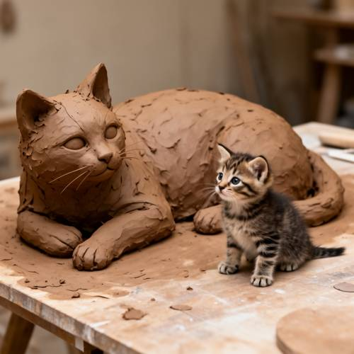
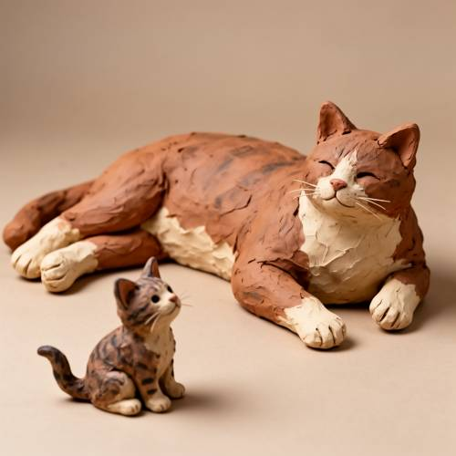
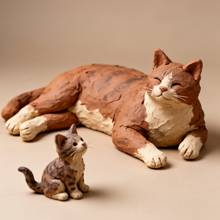
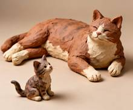

Relationship — A clay sculpture, a huge adult cat lying lazily, not far away a small
A clay sculpture, a huge adult cat lying lazily, not far away a small kitten is curiously staring at it.

Direct — one call, no iteration

Continuum — Qwen3.8-27B + FLUX.2-dev
Judge — Direct
FAILRelationship - Comparison — The prompt starts with 'A clay sculpture,' which implies the entire scene described should be a single sculpture. The image shows a large clay sculpture of an adult cat, but the small kitten next to it is a real, live animal, not part of the clay sculpture. Therefore, the image does not accurately represent the subjects for comparison as implied by the prompt, which describes a single piece of artwork.
PASSAction - Non-contact Interaction — The image depicts a small kitten sitting next to a large clay sculpture of a cat. The kitten's head and eyes are turned towards the sculpture, indicating that it is looking at it. This fulfills the requirement that the small kitten is staring at the large cat.
Judge — Continuum
PASSRelationship - Comparison — The image displays two clay sculptures of cats. One cat is considerably larger than the other. The larger cat is lying down, while the much smaller cat is sitting. This size difference aligns with the prompt's description of a 'huge adult cat' and a 'small kitten'.
PASSAction - Non-contact Interaction — The small clay kitten is depicted in a seated position with its head tilted upward. Its eyes are painted to look in the direction of the larger cat, which is located behind and to the right of it. This posture and gaze clearly represent the action of the kitten 'staring at' the larger cat.
What the agent did
Thinking
Let me generate an image: a clay sculpture of a large adult cat lying lazily, with a small kitten not too far from it, gazing at it curiously. First, let me generate using flux2-dev.
Step 1 — `generate_image`
{
"prompt": "A handcrafted clay sculpture diorama: a huge adult cat lying down lazily, sprawled on its side with relaxed limbs, soft terracotta matte clay texture with visible hand-molding marks and finger smoothing, earthy brown and cream tones. Not far away in the foreground, a small kitten sculpture sits upright with head tilted, ears perked, curiously staring at the big cat. The two are on a simple studio background, soft diffused lighting, shallow depth of field, warm neutral backdrop, fine art photography of a pottery/clay sculpture.",
"model": "flux2-dev",
"width": 1024,
"height": 1024
}
Result img_0

Thinking
The result is really great. Let's check it against the prompt: - Clay sculpture ✓ — looks like terracotta/clay with a visible hand-molded texture - Large adult cat lying lazily ✓ — big cat is lying down, eyes closed, relaxed - A small kitten not far from it, gazing curiously ✓ — kitten is sitting, looking up toward the large cat Let me inspect the details a bit and verify the quality — the kitten's gaze, the faces. The kitten is looking up at the large cat, which matches "gazing curiously." Everything seems to be in place. I could also zoom in to check for any artifacts.
Step 2 — `inspect_region`
{
"image": "img_0",
"roi": "the small kitten",
"padding": 0.1
}
Result img_1

Step 3 — `inspect_region`
{
"image": "img_0",
"roi": "the big cat's face",
"padding": 0.1
}
Thinking
The first inspect returned a full-image crop (seems like a text-based roi matched the whole scene). The kitten looks great — sitting, head tilted, gazing up curiously at the big cat. The big cat is lying lazily with eyes closed, with a relaxed expression. The clay texture is visible throughout, in terracotta and cream tones. Let me inspect the big cat's face with a rectangle instead of text.
The close-up of the big cat's face looks good: eyes are closed in a relaxed, contented expression, clay texture is clearly visible, and the whiskers are also well done. Everything matches the prompt: - Clay sculpture ✓ (hand-sculpted terracotta texture, with cracking and molding marks visible) - Big adult cat lying lazily ✓ (sprawled out with eyes closed) - A small kitten not too far from it, gazing curiously ✓ (kitten sitting, looking up with its head tilted) No flaws worth fixing. Marking img_0 as the best and stopping.
Model
The close-up confirmed that the details are good: the large cat has its eyes gently closed and a relaxed, sleepy face, with visible hand-molded clay texture and delicate whiskers. The kitten in the foreground is sitting upright with its head tilted, curiously gazing at the large cat — just as per the prompt.
Step 5 — `mark_best`
{
"image": "img_0",
"reason": "Fully matches the prompt: clay-textured sculpture of a huge adult cat lying lazily with closed eyes, and a small kitten nearby gazing at it curiously. Clean faces, good composition, no artifacts."
}
Thinking
I'll complete this. I'll mark the image and stop.
Model
Done. The image shows a hand-sculpted clay diorama with a huge adult cat sprawled lazily — eyes closed, contented — while a small tabby kitten sits nearby, head tilted up, curiously staring at the big cat. Both figures have convincing terracotta and cream clay textures with visible hand-molding marks, photographed on a warm neutral studio background. I've marked it as the best result.